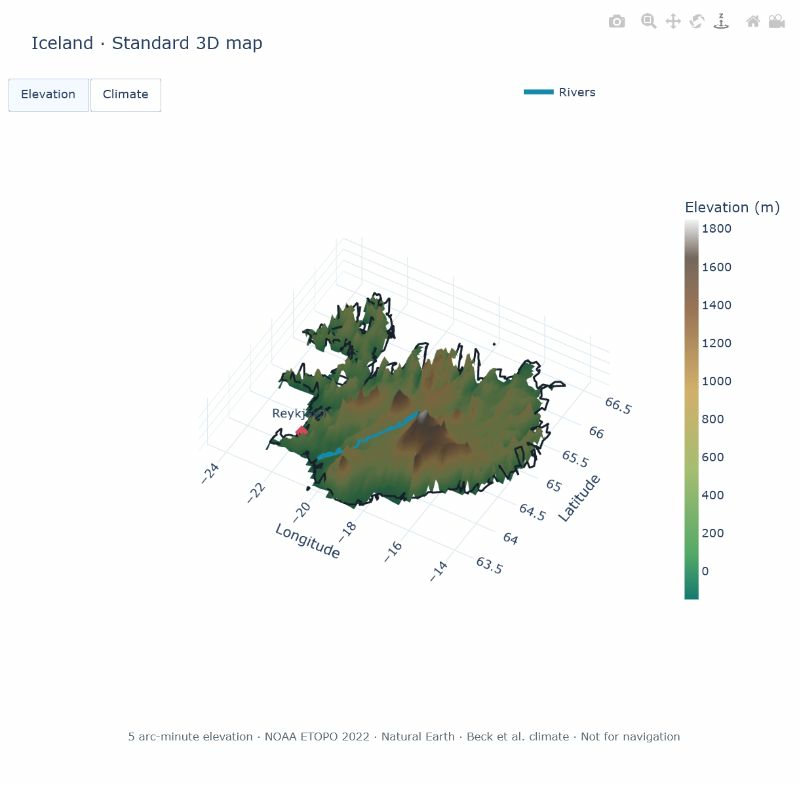

Interactive 3D maps
PyWorldAtlas can open a rotatable country terrain map directly from Python.
The viewer runs in the default browser because WebGL provides smooth,
cross-platform 3D interaction. After installation, the map data and viewer are
fully offline: show() writes a local HTML document and opens that file.

A real Standard-edition render of Iceland. Rotate and zoom the live view, then switch from elevation to climate without contacting a server.
Choose a map edition
The ordinary package remains small and dependency-free. Add exactly one map edition when interactive maps are wanted:
Install |
Elevation sampling |
Data wheel |
Best for |
|---|---|---|---|
|
20 arc-minutes |
about 2.1 MB |
Lessons, quick exploration, and modest computers |
|
5 arc-minutes |
about 8.2 MB |
The recommended general-purpose experience |
python -m pip install --upgrade "pyworldatlas[maps]"
Overview and Standard cover the same 248 profiles and expose the same API. Standard simply samples the pinned elevation surface more densely and uses a more detailed river layer. Detailed and Ultra editions are not part of 0.9.
Open your first map
from pyworldatlas import Atlas
with Atlas() as atlas:
atlas.map("Iceland").show()
That one call opens a standalone browser view containing:
rotatable and zoomable 3D elevation;
an elevation or Köppen-Geiger climate surface switch;
generalized country outlines;
source-provided river centerlines;
the primary capital when coordinates are available; and
visible resolution, source, and navigation-use notes.
show() returns the generated Path, so applications can
log or reuse the exact local document.
Select a quality explicitly
quality="auto" is the default. It prefers Standard when installed and
otherwise uses Overview. An application can request a specific installed
edition when reproducibility matters:
>>> from pyworldatlas import Atlas
>>> with Atlas() as atlas:
... brazil = atlas.map("BR", quality="overview")
... print(brazil.country_name, brazil.quality, brazil.resolution_arc_minutes)
Brazil overview 20
Use quality="standard" or quality="overview". A missing edition raises
MapSupportNotInstalledError with the exact installation
command rather than silently downloading data.
Notebooks, customization, and export
Use pyworldatlas_mapview.CountryMap.figure() to obtain the underlying
Plotly figure. It can display inline in a compatible notebook or be customized
with normal Plotly methods:
with Atlas() as atlas:
map_view = atlas.map("Japan")
figure = map_view.figure()
figure.update_layout(height=760)
figure.show()
Write a permanent, self-contained HTML document without opening it:
with Atlas() as atlas:
atlas.map("Switzerland").write_html("switzerland-map.html")
The exported document embeds the renderer and selected country data. It does not depend on a CDN or a running Python process.
Data meaning and limits
Elevation comes from the NOAA NCEI ETOPO 2022 ice-surface global relief model. Standard samples the 60 arc-second source every five cells; Overview samples the same pinned snapshot every twenty cells. The maps are educational relief visualizations and are not suitable for navigation or site-level elevation decisions.
Climate coloring uses the pinned Beck et al. 1991–2020 Köppen-Geiger raster. Outlines and river centerlines use generalized Natural Earth data. The outline supports visualization only: 0.9 does not expose boundary coordinates, GeoJSON, point-in-country tests, or legal boundary claims through the public API. Small islands and narrow coastlines can be visibly generalized at the selected elevation resolution.
See Data sources and freshness, Data quality and limitations, and Educational purpose and editorial policy for the complete source, editorial, and interpretation policies.